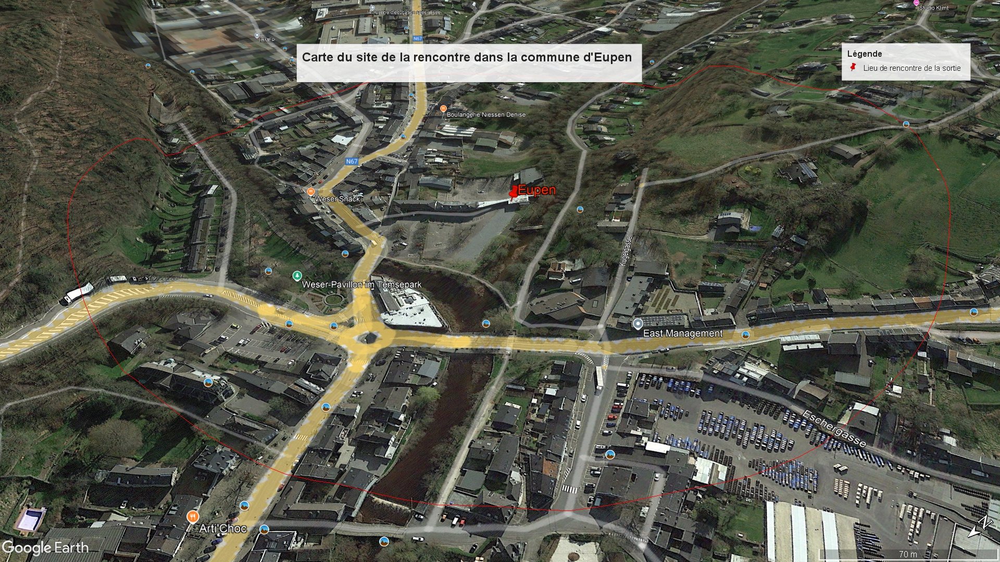
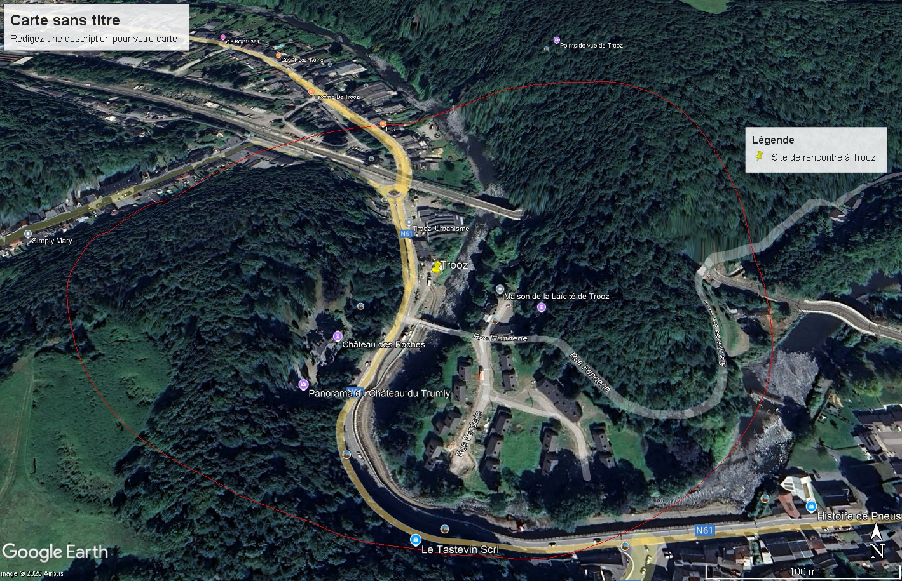

21 Gouvernance, planification d’urgence, résilience et adaptation – REX
Le format d’évaluation du présent module est un rapport individuel écrit. Le contenu du rapport comprend une section portant sur l’analyse réflexive autour des enjeux et des dimensions des problèmes que l’étudiant aura identifié. Cette analyse est le centre du rapport qui devra remettre. Cependant, qu’est ce qu’une analyse réflexive ? C’est à cette question que notre premier chapitre de ce module tente de donner des réponses à travers une synthèse de l’article proposé l’équipe de coordination du master intitulé : Analyse réflexive de pratiques et développement de nouvelles compétences de Clerc et Agogué (2014).

21.1 Guide d’une séance d’analyse réflexive de pratique en 6 phases
21.1.1 Introduction
L’analyse réflexive de pratique est avant tout une compétence professionnelle. Elle ne vise pas à juger une action passée, mais à comprendre, selon les mots de Philippe Perrenoud, « comment on s’y prend » dans son travail au quotidien. L’objectif fondamental de cette démarche est de passer d’une posture explicative - souvent une « analyse situationnelle » qui cherche des solutions immédiates - à une posture compréhensive, qui cherche à élucider le sens de nos actions et de notre implication personnelle.
Pour y parvenir, il est nécessaire de créer un cadre qui permet un véritable « lâcher prise » sur nos postures défensives. C’est pourquoi la séance se déroule selon un processus structuré et sécurisant en six phases. Ce n’est pas une simple procédure, mais un dispositif pensé pour être un « contenant » symbolique et protecteur pour la pensée et les émotions.
21.1.2 Présentation des 6 phases du dispositif
Il est essentiel de comprendre que le protocole d’analyse (le “cœur” de la séance) ne se suffit pas à lui-même. Il est soigneusement encadré par des phases préparatoires et conclusives qui créent les conditions de la confiance et de l’apprentissage. Voici la structure complète :
Phase 1 : Poser le cadre de confiance
Phase 2 : clarifier les intentions et les règles
Phase 3 : Le cœur du processus (Le protocole d’analyse)
Phase 4 : Le temps de l’exposant (retour et distanciation)
Phase 5 : Le temps du groupe (élaboration collective)
Phase 6 : La méta-analyse (apprendre sur le processus)
21.1.2.1 Phase 1 : Poser le Cadre de Confiance
La toute première étape est fondamentale : créer un espace de travail sécurisant où chaque participant se sent en confiance pour s’exprimer. Pour cela, l’animateur présente trois éléments clés qui constituent ce cadre symbolique protecteur :
Le cadre de référence théorique : L’approche de la psychosociologie clinique est explicitée. Cela signifie que nous nous intéressons non seulement aux faits, mais aussi à la manière dont le professionnel est impliqué personnellement et émotionnellement dans la situation, en lien avec son environnement social et institutionnel.
La place et le rôle de l’animateur : Il se présente comme le garant du cadre, du respect des règles et de la parole de chacun. Il n’est pas un expert qui donne des solutions, mais un facilitateur du processus.
La fonction du groupe : Il est invité à devenir le lieu d’une co-élaboration in situ. La richesse de l’analyse naîtra de la créativité collective et de la capacité du groupe à penser ensemble.
Une fois ce contenant établi, il est temps de clarifier les objectifs et les règles du jeu.
21.1.2.2 Phase 2 : Clarifier les Intentions et les Règles (Le Dispositif)
L’animateur expose ici les “règles du jeu” de la séance, afin que chacun comprenne le “pourquoi” de la démarche et s’y engage pleinement.
| Élément Présenté | Objectif Principal pour le Participant |
| Intentions de formation | Comprendre les compétences qui seront développées, notamment la capacité réflexive. |
| Règles de fonctionnement | Intégrer les principes de base : Anonymat et principe de confidentialité, respect de la parole d’autrui, non-jugement et non-évaluation, engagement, et bienveillance sans complaisance. |
| Enjeux professionnels | Saisir la pertinence de la démarche pour élucider ses propres logiques en situation professionnelle. |
Le cadre est posé, les règles sont claires. Le groupe est désormais prêt à entrer dans le cœur du processus.
21.1.2.3 Phase 3 : Le Cœur du Processus (Le Protocole d’Analyse)
Nous arrivons au moment central, où l’objet de travail va progressivement se déplacer. Nous partons d’une « situation », qui est le premier objet commun, pour tendre vers la compréhension de la « pratique », c’est-à-dire la relation singulière qu’entretient le professionnel avec cette situation. Le respect scrupuleux des étapes suivantes est crucial pour opérer ce déplacement.
Présentation des situations : Chaque participant qui le souhaite expose brièvement (2-3 minutes) une situation qui lui a posé question.
Choix collectif d’UNE situation : Le groupe choisit la situation à analyser, souvent sur un critère de consensus ou d’urgence.
Exposé détaillé par le narrateur : La personne choisie raconte en détail la situation, en précisant les événements qui ont fait question pour elle.
Clarification par des questions factuelles : Le groupe pose uniquement des questions visant à obtenir des faits complémentaires. L’objectif est d’objectiver la situation, de différer toute interprétation hâtive et d’explorer les zones laissées sous silence par l’exposant pour construire une image plus complète.
Émission des hypothèses interprétatives : Chacun propose des pistes de compréhension en s’appuyant sur ce qui a été dit. Le but est de co-construire une analyse collective et non de trouver LA bonne solution.
Après cette phase d’analyse intense, les étapes suivantes sont dédiées à la prise de distance et à l’intégration des apprentissages.
21.1.2.4 Phase 4 : Le Temps de l’Exposant (Retour et Distanciation)
Cette phase est un moment de respiration et d’intégration pour la personne qui a exposé sa situation. L’animateur lui pose une question ouverte, comme : “Que retenez-vous de ce moment de travail ensemble ?” Ce temps lui permet de formuler ce qu’il a compris ou ce qui reste flou, mais surtout de commencer à voir se dessiner sa propre pratique. En entendant les hypothèses du groupe, il prend conscience de son style professionnel et de la part subjective de son implication. L’animateur rappelle que la mise au travail pourra se continuer ailleurs, au-delà de la séance.
21.1.2.5 Phase 5 : Le Temps du Groupe (Élaboration Collective)
Le focus se déplace maintenant de l’exposant vers l’ensemble du groupe. L’objectif est de revenir sur le processus d’analyse pour donner collectivement du sens aux différentes pistes explorées et aux enjeux révélés (psychiques, organisationnels, institutionnels). Cette phase permet de consolider la capacité réflexive « en acte » du groupe en analysant non seulement la situation, mais aussi la manière dont elle a été comprise collectivement.
Cette réflexion sur le quoi (le contenu analysé) mène naturellement à une réflexion sur le comment (la manière dont le groupe a travaillé), qui est l’objet de la dernière phase.
21.1.2.6 Phase 6 : La Méta-analyse (Apprendre sur le Processus)
La méta-analyse est un « retour sur le processus du groupe en formation ». C’est un temps où l’on regarde non plus la situation, mais la manière dont le groupe a fonctionné pour l’analyser. Son but est de reconsidérer, dans « l’après-coup », ce qui s’est passé dans la dynamique groupale : les moments d’hésitation ou d’« errances », les accélérations de la pensée, les idées fortes qui ont émergé, les réactions émotionnelles. C’est dans ce moment de réflexion sur l’expérience vécue que les compétences en cours d’acquisition peuvent être nommées et que la posture réflexive s’ancre durablement chez chaque participant.
21.1.3 Conclusion
La structure en six phases n’est pas une simple procédure. C’est un dispositif puissant, un « contenant » conçu pour créer les conditions psychologiques — confiance, sécurité et autorisation de « lâcher prise » — indispensables au développement d’une véritable posture réflexive. En guidant les participants à travers ces étapes, le cadre ne se contente pas de résoudre un problème ponctuel ; il enseigne une nouvelle manière de penser sa propre pratique. C’est cet apprentissage progressif et sécurisé qui permet de transformer durablement sa pratique professionnelle.
21.2 Synthèse de la conférence : pesticides et PFAS - enjeux sanitaires, environnementaux et politiques

La conférence s’ouvre sur un extrait du film Dark Waters, qui illustre l’affaire judiciaire de l’avocat Robert Bilott contre la multinationale DuPont. Ce cas emblématique met en lumière :
- La dissimulation par l’industrie d’informations sur la toxicité des PFAS.
- Le rôle clé de citoyens et de juristes dans la mise au jour de scandales sanitaires.
- L’impuissance (ou la complaisance) des pouvoirs publics face au lobbying industriel.
Cet extrait sert de cadre pour introduire le débat sur les pesticides et les PFAS, deux catégories de substances chimiques omniprésentes, persistantes et controversées.
21.2.1 Résumé
Ce présent rapport, est une forme de compte rendu de la conférence. Il fait une synthèse analytique des enjeux critiques liés à deux grandes familles de polluants chimiques : les pesticides et les substances per- et polyfluoroalkylées (PFAS), également connues sous le nom de “polluants éternels”. L’analyse, basée sur les contextes fournis, révèle une contamination environnementale généralisée et une exposition humaine omniprésente, engendrant des risques sanitaires graves et documentés, incluant divers types de cancers, des perturbations endocriniennes et des troubles du développement.
Un thème central qui émerge est la défaillance systémique de la réglementation, caractérisée par un décalage majeur entre les connaissances scientifiques sur les dangers de ces substances et les mesures de protection mises en place. Cette inertie réglementaire est largement attribuée à l’influence de puissants lobbies industriels qui déploient des stratégies sophistiquées de “fabrique du doute”, telles que le “ghostwriting” d’études scientifiques, pour retarder les interdictions et dissimuler la toxicité de leurs produits. Face à des défis de dépollution colossaux, souvent techniquement et financièrement irréalisables, la solution la plus viable est la prévention, c’est-à-dire l’arrêt des émissions à la source. Parallèlement, le journalisme d’investigation, les actions en justice et les initiatives citoyennes se révèlent être des contre-pouvoirs essentiels, permettant de mettre en lumière l’étendue des pollutions, d’établir les responsabilités et de pousser à une action politique et réglementaire plus stricte. Le pouvoir des choix de consommation, notamment en faveur d’une agriculture biologique, est également souligné comme un levier d’action individuel et collectif.
21.2.2 Émergence d’une crise sanitaire et environnementale
L’histoire de l’avocat Rob Bilott, qui a exposé la contamination massive causée par l’entreprise DuPont avec les PFAS, sert de paradigme pour comprendre la crise actuelle. Relatée dans le film “Dark Waters”, cette affaire illustre la ténacité requise pour faire face à de puissantes multinationales qui dissimulent la toxicité de leurs produits et la complexité scientifique des polluants qu’elles commercialisent. Cette lutte a révélé une contamination qui, comme celle des pesticides, s’est étendue bien au-delà des sites industriels pour toucher l’ensemble des écosystèmes et des populations.
21.2.3 Portrait des polluants incriminés
21.2.3.1 Les pesticides : Un outil agricole à double tranchant
Définition et catégories : les pesticides sont des substances conçues pour éliminer des espèces vivantes jugées nuisibles aux cultures. Ils se divisent en plusieurs catégories :
- Herbicides : pour éliminer les “mauvaises herbes” (ex: le glyphosate).
- Insecticides : pour tuer les insectes (ex: les néonicotinoïdes, connus pour leur impact sur les abeilles).
- Fongicides : pour combattre les moisissures et champignons (ex: le chlorothalonil, un polluant majeur des nappes phréatiques).
Historique et usage : leur utilisation a commencé dans les années
1940et a connu une croissance exponentielle à partir des années1970. Le modèle agricole intensif moderne en est devenu massivement dépendant.Acteurs économiques : Le marché est dominé par un petit nombre de multinationales extrêmement puissantes (ex: Bayer qui a racheté Monsanto, Syngenta), consolidées par de nombreuses fusions.
21.2.3.2 Les PFAS : Les “Polluants Éternels” omniprésents
Définition et propriétés : les PFAS sont une famille de composés chimiques de synthèse, d’origine anthropique. Leur caractéristique principale est la liaison carbone-fluor, l’une des plus stables en chimie organique. Cette stabilité leur confère des propriétés antiadhésives, imperméabilisantes et une résistance aux hautes températures, mais les rend également quasi indestructibles, d’où leur surnom de “polluants éternels”.
Applications : on les retrouve dans un nombre considérable de produits de consommation courante et industriels :
- emballages alimentaires (cartons à pizza, hamburgers) ,
- ustensiles de cuisine (poêles en Téflon)
- vêtements imperméables et textiles techniques,
- cosmétiques (produits “waterproof”),
- mousses anti-incendie (utilisées sur les bases militaires et les aéroports),
- électronique, batteries, production d’hydrogène, et secteur aéronautique.
Acteurs économiques : les inventeurs historiques sont les entreprises américaines DuPont (aujourd’hui Chemours) et 3M. Le marché reste concentré entre quelques grands groupes industriels en raison de la complexité de cette chimie.
21.2.4 Contamination généralisée et voies d’exposition
La contamination par ces deux familles de produits est aujourd’hui généralisée, touchant l’air, l’eau, les sols et même les nuages.
21.2.4.1 Exposition aux pesticides : du champ à l’assiette
L’exposition aux pesticides se produit via de multiples voies :
- Exposition professionnelle : les agriculteurs, les ouvriers saisonniers, les fleuristes et les éleveurs sont en première ligne. C’est chez ces populations que les effets sanitaires sont les mieux documentés.
- Exposition résidentielle : les riverains des zones agricoles sont exposés aux dérives de pulvérisation. Des études montrent des effets sanitaires à des distances allant jusqu’à 1,5 km des zones de traitement.
- Exposition alimentaire : des résidus de pesticides se retrouvent dans les aliments issus de l’agriculture conventionnelle. Par exemple, une pomme peut subir plus de 36 traitements au cours d’une saison, et le fruit final peut contenir entre 6 et 9 résidus de pesticides différents.
- Exposition domestique : utilisation invisible dans les produits vétérinaires (colliers anti-puces), les détergents ou les shampoings anti-poux.
21.2.4.2 Pollution par les PFAS : des épicentres industriels à la planète entière
La pollution par les PFAS est caractérisée par des “épicentres” de contamination majeure autour des sites de production (ex: Pierre-Bénite en France, Zwijndrecht en Belgique). De là, les substances se dispersent et contaminent les nappes phréatiques, les cours d’eau et l’environnement à l’échelle mondiale. Une source majeure de préoccupation actuelle est le TFA, un PFAS à chaîne courte provenant notamment de la dégradation des gaz réfrigérants de troisième génération (utilisés dans les climatiseurs et pompes à chaleur).
21.2.5 Impacts documentés sur la santé humaine et les écosystèmes
21.2.5.1 Pathologies associées aux pesticides
Les études scientifiques, notamment celles menées sur les clusters de cancers pédiatriques en France (ex: Sainte-Pazanne), établissent des liens de plus en plus forts entre l’exposition aux pesticides et des pathologies graves, en particulier chez les enfants :
- Leucémies (cancers du sang).
- Troubles cognitifs et du développement.
- Maladies métaboliques comme le diabète.
21.2.5.2 Les effets multiples des PFAS sur l’organisme
Les PFAS s’accumulent dans le corps humain et persistent pendant des années. Leurs effets toxiques documentés sont variés et touchent de multiples systèmes :
Santé fœtale et infantile : faible poids à la naissance, réponse vaccinale affaiblie, retards de développement.
Perturbation endocrinienne notamment les maladies de la thyroïde.
Effets métaboliques (ex : augmentation du cholestérol).
Toxicité hépatique ; atteintes au foie.
Cancers du rein et des testicules.
Une étude en Belgique a également montré des retards de puberté chez les adolescents exposés.
21.2.6 La défaillance réglementaire et la capture industrielle
Un constat majeur est l’échec des systèmes réglementaires à protéger les populations et l’environnement face à ces menaces chimiques.
21.2.6.1 Un droit à la traîne de la science
Le concept de “risque acceptable”, qui sous-tend la réglementation, est défini par des comités d’experts sans consultation citoyenne, un processus décrit comme étant “capturé” par les intérêts industriels. Il en résulte un décalage flagrant entre les données scientifiques et les normes légales.
- Pour les pesticides : alors que des effets sanitaires sont observés à moins de 1,5 km des champs, la réglementation française impose des zones de non-traitement de seulement 5 à 10 mètres près des habitations.
- Pour les PFAS : la réglementation est fragmentée et lente. Le concept d’“usage essentiel” est utilisé pour organiser une sortie progressive du marché, mais la définition de ce qui est “essentiel” est un enjeu politique majeur. Pour de nombreux PFAS, comme le TFA, les normes dans l’eau potable ne sont pas harmonisées en Europe et varient considérablement d’un pays à l’autre (ex: 2200 ng/L recommandé en Wallonie, basé sur les Pays-Bas, contre 60 000 ng/L en Allemagne).
21.2.6.2 La “fabrique du doute” : stratégies d’influence de l’industrie
Les industries chimiques déploient des stratégies d’influence bien rodées pour contrer ou retarder la réglementation :
- Lobbying intense : l’industrie a inondé la consultation publique sur le projet de restriction universelle des PFAS en Europe avec plus de 5600 contributions, retardant considérablement le processus.
- “Ghostwriting” : cette pratique consiste pour une entreprise à rédiger une étude scientifique favorable à ses produits et à la faire signer par des scientifiques externes pour lui donner une apparence de crédibilité. Des documents internes de Monsanto ont révélé que cette pratique était banale.
- Dissimulation de données : les entreprises connaissent souvent la toxicité de leurs produits des décennies avant les régulateurs et le public. Des documents internes de 3M ont montré que l’entreprise savait dès 1975 que les PFAS s’accumulaient dans le sang humain.
21.2.6.3 Le cas du glyphosate
En 2015, le Centre International de Recherche sur le Cancer (CIRC), une agence de l’ONU, a classé le glyphosate comme “cancérogène probable”. Malgré ce classement et plus de 100 000 procès aux États-Unis, l’Union Européenne a réautorisé l’herbicide pour 10 années supplémentaires en 2023. Cette décision illustre l’incapacité du système réglementaire à agir sur la base des plus hauts niveaux de preuve scientifique face à la pression industrielle.
21.2.6.4 Journalisme, justice et initiatives citoyennes : Les nouveaux contre-pouvoirs
Face à l’inertie institutionnelle, de nouveaux acteurs émergent pour forcer le changement.
Le “Forever Pollution Project” : Cette enquête journalistique collaborative internationale a permis de créer la première carte européenne de la contamination par les PFAS. En rendant visible l’invisible, ce projet a provoqué un choc politique et citoyen, et a mis en lumière les lacunes dans la surveillance environnementale.
La justice comme recours : les actions en justice se multiplient. Des décisions marquantes ont été rendues, comme la condamnation d’anciens dirigeants d’usines en Italie à des peines de prison, ou la reconnaissance par la Cour suprême suédoise que la présence de PFAS dans le sang constitue un “dommage corporel”.
Le pouvoir du citoyen-consommateur : les citoyens s’organisent pour mener leurs propres études d’imprégnation (ex: analyse de cheveux d’enfants à La Rochelle) et faire pression sur les pouvoirs publics. Par ailleurs, choisir une alimentation issue de l’agriculture biologique permet de refuser de cautionner un système agricole dépendant des pesticides et de ne pas payer les “coûts cachés” de la dépollution, qui sont supportés par la collectivité.
21.2.7 Les solutions : entre prévention et décontamination illusoire
La prévention : “fermer le robinet”
Étant donné la persistance extrême des PFAS, la seule stratégie efficace est de stopper leur production et leur émission à la source. Le projet de restriction universelle au niveau européen est une étape cruciale dans cette direction. Pour les pesticides, cela implique une transformation profonde du modèle agricole.
21.2.8 Les limites de la dépollution technologique
Les solutions de dépollution pour les PFAS sont extrêmement coûteuses, énergivores et souvent inefficaces pour les molécules à chaîne courte. L’incinération à très haute température (>1100°C) peut les détruire, mais n’est pas applicable à grande échelle. Une étude a calculé qu’il n’y avait pas assez d’argent sur Terre pour éliminer tous les PFAS déjà émis depuis les années 1940.
Vers une transformation du modèle agricole
L’argument selon lequel les pesticides sont indispensables pour nourrir une population mondiale croissante est remis en question. Une part significative des surfaces agricoles (\(70\%\)) est utilisée pour nourrir le bétail ou produire des agrocarburants, et non directement pour l’alimentation humaine. De plus, \(30\%\) de la production alimentaire est gaspillée. Une transition vers un modèle agricole durable, local et moins dépendant des intrants chimiques est non seulement possible, mais nécessaire pour préserver les écosystèmes (ex: pollinisateurs) dont la production alimentaire dépend.
21.2.9 Conclusion
Cette conférence dresse un constat sans appel : nous faisons face à une contamination chimique généralisée et systémique. Les PFAS et les pesticides ne sont pas de simples polluants locaux ; ils ont infiltré le cycle de l’eau, nos nuages et jusqu’à nos propres organismes, créant une dette toxique pour les générations futures.
Trois leçons fondamentales émergent de ces échanges pour l’avenir :
- L’échec de la régulation actuelle : le concept de « risque acceptable » est une fiction politique déconnectée de la réalité biologique. Les distances de sécurité sont insuffisantes face à la dispersion des produits, et les processus de décision sont trop souvent capturés par les stratégies industrielles de « fabrique du doute » et de lobbying.
- Il n’y a pas de solution miracle technologique : dépolluer l’intégralité de la planète est économiquement et techniquement impossible. La seule voie viable est la prévention à la source : il faut impérativement « fermer le robinet » des émissions et transformer radicalement nos modèles agricoles et industriels.
- Le pouvoir est du côté des citoyens et de la justice : face à l’inertie, l’espoir réside dans la science citoyenne, le journalisme d’investigation et les tribunaux. Les victoires juridiques récentes, reconnaissant par exemple la présence de PFAS dans le sang comme un dommage corporel, prouvent que l’impunité n’est pas une fatalité.
21.3 De l’agronomie à la démocratie alimentaire : le parcours de Mathieu Dalmais
21.3.1 Introduction
L’alimentation n’est jamais neutre ; elle est l’un des premiers et des plus puissants outils politiques pour organiser et hiérarchiser une société. Pour illustrer cette thèse, que l’on retrouve notamment dans les travaux de Paul Ariès sur l’histoire politique de l’alimentation, le conférencier Mathieu Dalmais commence par une anecdote historique : c’est à la cour de Louis XIV que l’« écuelle » est renommée « assiette ». Ce changement de nom n’est pas anodin. La fonction de ce nouvel objet n’est plus seulement de contenir de la nourriture, mais de définir le nombre de places assises à la table du pouvoir. En préparant les tables avec une assiette par personne et un titre de noblesse attendu, la noblesse transforme un simple objet en un instrument de distinction sociale et d’exclusion de la bourgeoisie montante. D’un point de vue anthropologique, manger ensemble signifie se reconnaître comme égaux. L’assiette devient alors le symbole de qui a le droit de participer à la construction de la société.
Fort de cette prise de conscience, Mathieu Dalmais nous invite à suivre son cheminement intellectuel. Il partage son parcours, depuis sa formation initiale d’agronome jusqu’à son engagement pour un projet radical de démocratie alimentaire : la Sécurité Sociale de l’Alimentation (SSA). Son récit est celui d’une série de révélations qui l’ont forcé à revoir ses questions et ses certitudes.
21.3.2 Le point de départ : Un agronome militant face à deux Questions
Au début de ses études en 2008, Mathieu Dalmais incarne une dualité : il est formé pour devenir un « cadre du complexe agroindustriel », mais ses convictions personnelles, façonnées par un milieu social populaire et une conscience écologique, le poussent vers un militantisme pour une agriculture paysanne. Ce conflit intérieur se cristallise autour de deux questions fondamentales qui animent sa réflexion :
- Comment nourrir le monde et sortir de la faim ?
- Comment transformer le système de production pour répondre aux enjeux environnementaux et sociaux ?
Cette tension le conduira à un premier acte de rébellion symbolique : le refus de son diplôme d’ingénieur agronome, marquant son opposition au système qu’on lui enseignait. C’est en cherchant une réponse à sa première question qu’il recevra sa première grande révélation, une véritable « baffe » intellectuelle.
21.3.3 Première révélation : La faim, un problème de pauvreté, pas de production
Face à la question de la faim dans le monde, Mathieu Dalmais rencontre deux discours radicalement opposés, qu’il synthétise ainsi :
La Réponse Agro-industrielle La Réponse Militante (Via Campesina) Augmenter la production par l’innovation technique : OGM, robotisation, numérisation, pesticides, etc. Instaurer la souveraineté alimentaire par le protectionnisme.
La réponse militante, portée par le syndicat international La Via Campesina, repose sur un constat simple : la faim n’est pas le résultat d’un manque de production. Au contraire, s’appuyant sur les chiffres de l’ONU ou de l’agronome Marc Dufumier, Dalmais rappelle que le monde produit déjà assez pour nourrir 12 à 13 milliards de personnes. Le véritable problème est la pauvreté, notamment celle des paysans et paysannes des pays du Sud. Le libre-échange les met en concurrence déloyale avec une agriculture occidentale massivement subventionnée et industrialisée, les empêchant de vivre de leur travail.
Cette révélation est une « baffe » pour Mathieu Dalmais. Il comprend que la solution n’est pas technique, comme on le lui enseigne, mais profondément politique. La question de la faim dans le monde étant pour lui “réglée” par le concept de souveraineté alimentaire, il décide de concentrer toute son énergie sur la transformation des modes de production en Occident. Son engagement dans les alternatives comme le bio et les circuits courts le mènera cependant à une deuxième désillusion, encore plus profonde.
21.3.4 Deuxième baffe : L’illusion des alternatives “inoffensives”
Au début des années 2010, une « fable » domine le milieu militant : les alternatives comme les circuits courts ou l’agriculture biologique permettraient de transformer le système de l’intérieur, en « convertissant » les agriculteurs un par un. On pense alors qu’en montrant un modèle plus juste et plus écologique, les autres suivront naturellement.
Cependant, son expérience à la Confédération Paysane en 2015 lui révèle l’échec de cette stratégie pour trois raisons principales :
La saturation des marchés : Dalmais illustre ce point avec une anecdote personnelle sur ses grands-parents. Issus du monde paysan, devenus ouvrier et femme de ménage à la ville, ils refusaient catégoriquement la culture alimentaire urbaine et ses produits transformés comme la « purée Mousline ». Pour eux, bien manger était une affirmation identitaire. Mais le bio ? « C’est pour les riches ». Cette histoire montre que les alternatives ne s’adressent qu’à une petite fraction de la population, culturellement et économiquement déterminée. Une fois cette demande satisfaite, le marché sature très vite, créant une concurrence féroce entre les producteurs alternatifs eux-mêmes.
La récupération par l’agro-industrie : Voyant une opportunité, la grande distribution a massivement investi le marché du bio. Ce tournant a été rendu possible par un événement politique : la baisse du cahier des charges européen du bio en 2011, qui a permis des fermes bio plus industrialisées. En 2014, la grande distribution a inondé le marché de produits bio moins chers, faisant chuter les prix et « prolétarisant » le monde paysan bio, qui en trois ans (2015-2018) a perdu la surrémunération qui lui permettait de vivre.
Le Prétexte Politique : L’existence même de ces alternatives est devenue un argument pour les politiques (comme le ministre Stéphane Lefol à l’époque) afin de justifier leur inaction. L’argument, néolibéral par excellence, est simple : puisque le marché offre le « choix », l’État n’a pas à intervenir. Cette dualisation de l’agriculture n’était pas un accident mais un projet politique, comme en atteste un rapport stratégique de 2008, co-écrit par un certain Emmanuel Macron. Ce rapport préconisait déjà une double agriculture : l’une, high-tech et tournée vers l’exportation, et l’autre, une petite agriculture de niche « bonne pour le tourisme ».
Dalmais comprend alors que ces initiatives, bien qu’indispensables, sont devenues ce que le collectif L’Atelier Paysan nomme des « alternatives inoffensives » dans son livre Reprendre la terre aux machines. Sans le vouloir, elles maintiennent le statu quo en occupant les militants les plus déterminés et en donnant une façade de choix à un système qui reste inchangé. Il faut changer radicalement de perspective : cesser de penser depuis la production pour commencer à penser depuis la consommation.
21.3.5 Le pivot intellectuel : repartir de l’Assiette
Le constat de l’échec des alternatives pousse Mathieu Dalmais à un pivot intellectuel majeur : il faut inverser la logique. Plutôt que de penser « de la fourche à la fourchette », il faut partir « de la fourchette à la fourche ».
Le nouvel objectif devient alors l’élaboration démocratique de la demande alimentaire. L’idée n’est plus que les producteurs proposent des alternatives en espérant trouver des consommateurs, mais que les citoyens décident collectivement de ce qu’ils veulent voir produit. C’est en portant cette idée auprès du ministre de l’Agriculture de l’époque que la véritable nature du blocage lui est révélée par une question cinglante :
“Qu’est-ce qu’ils vont manger les pauvres ?”
Cette question met en lumière un impensé. Une agriculture agroécologique généralisée produirait une alimentation de meilleure qualité, mais plus chère, alors que 30 à 40 % de la population en France est déjà économiquement exclue de ces produits. Dalmais comprend que l’agro-industrie n’est pas l’ennemi final, mais le « mercenaire » d’un projet politique bien plus vaste : celui de baisser le coût de renouvellement de la force de travail. L’historien Paul Ariès montre que cette stratégie est séculaire : au XIe siècle déjà, la noblesse française imposa la culture du blé (moins nutritive mais nécessitant moins de main-d’œuvre) au détriment du maraîchage et du petit élevage paysans, afin de libérer des bras pour construire des châteaux et faire la guerre.
Pour pouvoir généraliser une agriculture de qualité, il faut donc d’abord changer cet objectif politique fondamental et garantir l’accès de toutes et tous à cette alimentation.
21.3.7 Conclusion : reprendre le pouvoir sur notre alimentation
Le parcours de Mathieu Dalmais est celui d’une transition, d’une vision initialement technique de l’agriculture à une compréhension profondément politique de l’alimentation. Son analyse le mène à une proposition concrète, la Sécurité Sociale de l’Alimentation, qui vise à répondre à deux objectifs indissociables :
- Orienter démocratiquement la production agricole et alimentaire.
- Assurer l’accès de toutes et tous à une alimentation de qualité et choisie.
En fin de compte, la conférence de Mathieu Dalmais nous ramène à l’assiette de Louis XIV. Le pouvoir politique de l’alimentation existera toujours ; la seule question est de savoir qui le détient. Plutôt que de le laisser concentré entre les mains de l’agro-industrie ou d’un État, le projet de SSA propose de le distribuer équitablement à chaque citoyen. Il s’agit de renverser l’exclusion historique en donnant à chacun non seulement un accès à l’assiette, mais aussi, et surtout, une place à la table des décisions.
21.4 Sécurité Social de l’Alimentation

Ce rapport propose une analyse synthétique des débats tenus lors de la journée de réflexion consacrée aux défis du système alimentaire organisé par le CREA**_SSA** sur le campus d’Arlon le jeudi 02 octobre. Il vise à fournir aux décideurs politiques, aux acteurs associatifs et à la société civile une vue d’ensemble structurée de la crise systémique qui affecte simultanément la santé publique, le modèle agricole et la cohésion sociale. En partant d’un diagnostic partagé, cette synthèse explore les interdépendances entre ces enjeux et examine les pistes de solutions envisagées, avec une attention particulière portée au concept de Sécurité Sociale de l’Alimentation (SSA) comme réponse potentielle à cette crise multidimensionnelle.
Présidium :
- Evelyne Melotte
- Martin Rieussec-Fournier
- Ariane Charrière
- Catherine Daloze
- Geneviève Baert
- Mathieu Dalmais
21.4.1 Le Constat d’une crise systémique à trois dimensions
Pour comprendre la nécessité d’une réforme profonde, il est essentiel d’analyser les trois principales facettes de la crise du système alimentaire. Bien que distinctes en apparence, ces dimensions - sanitaire, agricole et sociale - sont profondément interconnectées et s’alimentent mutuellement, créant une spirale négative dont il est urgent de sortir.
21.4.1.1 L’Urgence sanitaire et environnementale
L’analyse de Martin Riotèque Fourmillet met en lumière le lien indissociable entre le modèle alimentaire dominant et une crise de santé publique aux coûts devenus insoutenables. - Contamination systémique : Le concept de “santé planétaire” illustre une réalité simple : la santé humaine ne peut être dissociée de celle des écosystèmes. L’usage massif de pesticides (60 000 tonnes par an en France, 300 000 en Europe) contamine les sols et les eaux, pour finalement se retrouver dans le corps humain. Ce que l’on met dans nos sols finit inévitablement dans notre sang, liant de manière irréfutable santé environnementale et santé publique. - Explosion des maladies chroniques : Les perturbateurs endocriniens et neurotoxiques présents dans les pesticides sont directement impliqués dans l’augmentation spectaculaire des maladies chroniques. En France, les cancers hormonodépendants, comme ceux du sein et de la prostate, explosent. Le coût humain de cette situation est dramatique, et son coût financier exorbitant, à l’image des 150 000 € nécessaires pour une seule chimiothérapie infantile.
• Un coût insoutenable pour la collectivité : L’impact économique de ce modèle est vertigineux. Les données françaises montrent que pour 1 € dépensé dans une alimentation industrielle, plus d’1 € de coûts cachés est généré pour la société. Cette logique économique est d’autant plus cynique que les mêmes entreprises en profitent à double titre : « C’est Bayer Monsanto qui fait des chimiothérapies. […] C’est un très bon business model. Ils font les pesticides et ils font les chimiothérapies », souligne Martin Riotèque Fourmillet. Le déficit de la sécurité sociale française, dont 10 milliards d’euros par an sont directement liés à l’explosion des affections de longue durée, en est une illustration frappante.
Le modèle alimentaire actuel ne crée pas simplement des coûts ; il draine activement les ressources du système de sécurité sociale destiné à protéger les citoyens, créant une boucle perverse où l’industrie agroalimentaire profite tandis que la solidarité collective paie le prix. Ceci impose aux décideurs de reconnaître que la régulation de l’agrochimie est devenue un enjeu de soutenabilité budgétaire pour le système de santé.
21.4.1.2 L’Impasse du modèle agricole
Le témoignage d’Ariane, agricultrice, révèle que le monde agricole est lui-même prisonnier d’un système qui freine massivement toute transition vers des pratiques durables. Le principal obstacle à la transition est le modèle productiviste, soutenu par les politiques publiques et l’industrie agrochimique. Ce système enferme les agriculteurs dans une dépendance économique et technique à la chimie, rendant toute sortie extrêmement difficile.
Plusieurs barrières concrètes empêchent les agriculteurs de changer de pratiques. L’isolement géographique des fermes rend la vente directe complexe. La formation aux pratiques alternatives est quasi inexistante, tandis que le lobby agrochimique exerce une pression constante. Enfin, le manque de temps (journées de 14h, 7j/7) prive les agriculteurs de l’espace mental nécessaire pour se former et repenser leur modèle.
Ariane critique vivement un système d’aides, notamment la Politique Agricole Commune (PAC), qui crée une forme d’assistanat et perpétue une dépendance structurelle. Elle rejette avec force ce paternalisme : « Il faut arrêter de nous aider, on est capable. Les agriculteurs les agricultrices sont capables, ils ont pas besoin d’aide. » Pour elle, les agriculteurs sont « déjà des assistés en permanence par un système pourri » et la solution ne réside pas dans des subventions, mais dans un accompagnement structurel et un modèle économique qui rendent la transition viable. Il s’agit d’une demande de partenariat et de dignité, pas d’assistance. Cela démontre que toute politique de réforme du système alimentaire doit d’abord s’attaquer au verrouillage économique et éducatif du secteur agricole lui-même.
21.4.1.3 La précarité alimentaire et la perte de dignité
La réalité vécue de la précarité alimentaire a été illustrée avec force par le témoignage de Geneviève, membre du Réseau Wallon de Lutte contre la Pauvreté, et contextualisée par l’analyse de Catherine Ball, du même réseau.
Un phénomène massif : Le recours à l’aide alimentaire est structurel et croissant. En Belgique, 600 000 personnes en dépendent pour se nourrir, dont 90 000 rien qu’à Bruxelles.
Une expérience de honte et de non-choix : Le témoignage de Geneviève est sans appel. L’aide alimentaire est une expérience de dépossession où la qualité des aliments est médiocre (« les repas principaux sont en général tartine au choc », « les légumes frais sont très rares ») et le choix inexistant. Les conditions matérielles rendent la cuisine même difficile, obligeant à « cuire les pommes de terre dans une bouilloire électrique ou d’utiliser un croque-monsieur comme cuisinière ». L’aide est surtout vécue comme une humiliation, une nécessité de se justifier en permanence : « Est-ce que c’est une chance de devoir déballer sa vie privée pour pouvoir manger ? »
L’alimentation comme variable d’ajustement : Pour les ménages en situation de précarité, le budget alimentaire est ce qui est sacrifié après le paiement des factures incompressibles (loyer, énergie). L’accès à une alimentation de qualité, saine et durable n’est donc pas une question de choix individuel, mais une impossibilité structurelle.
Cette réalité illustre qu’une politique alimentaire qui ignore la question du revenu et de la dignité est vouée à l’échec, car elle s’adresse à des individus qui n’ont structurellement pas les moyens d’être les “consom’acteurs” que le système attend.
21.4.2 L’interdépendance des enjeux : Une spirale négative
La force du diagnostic posé réside dans la démonstration que ces trois crises - sanitaire, agricole et sociale - ne sont pas des phénomènes parallèles. Elles s’alimentent mutuellement, créant un cercle vicieux systémique. Le modèle agricole low-cost, en favorisant les grandes exploitations dépendantes de la chimie, produit une alimentation de faible qualité nutritionnelle et chargée en résidus toxiques, ce qui dégrade la santé de l’ensemble de la population. Pour les ménages les plus précaires, cette nourriture industrielle est souvent la seule option économiquement accessible, ce qui aggrave les inégalités de santé et concentre les pathologies sur les plus vulnérables.
En retour, la précarité et l’absence de pouvoir d’achat empêchent une grande partie des “mangeurs” de soutenir, par leurs actes de consommation, les modèles agricoles alternatifs qui proposent des produits de meilleure qualité. Cette situation maintient les agriculteurs engagés dans la transition dans une niche économique fragile et les empêche de changer d’échelle, bouclant ainsi la spirale négative. Toute solution efficace doit donc impérativement adresser ces trois enjeux de manière simultanée et coordonnée, sous peine de ne traiter que les symptômes sans jamais s’attaquer aux racines du problème.
21.4.4 Débats, freins et voies de mise en oeuvre
Au-delà de la présentation du concept, les discussions ont permis de mettre en lumière les tensions stratégiques, les points de vigilance et les pistes d’action pragmatiques. Les débats ont révélé une tension centrale : alors que l’ambition systémique de la SSA constitue sa force principale, sa complexité perçue (la crainte d’une “usine à gaz”) alimente des appels à des premiers pas plus pragmatiques, au risque de diluer son potentiel transformateur.
21.4.4.1 Tensions et points de vigilance
Les échanges ont révélé des perspectives différentes sur les conditions et les priorités de la mise en œuvre d’un tel système.
| Débat / Tension | Position et arguments Clés |
|---|---|
| Autonomie agricole vs. Conventionnement | Ariane (agricultrice) : Exprime une crainte que le conventionnement ne devienne une nouvelle contrainte, similaire à la labellisation, qui entraverait l’autonomie et la liberté des paysans. Mathieu Dalmais (SSA) : Répond en distinguant l’indépendance (illusion offerte par le marché) de l’autonomie réelle (gagnée via un contrat social démocratique qui maîtrise les dépendances). |
| Ambition systémique vs. Complexité | Martin Riotèque Fourmillet (santé) : Tout en étant convaincu de la nécessité de sécuriser l’accès à l’alimentation, il exprime une crainte que la SSA soit une “usine à gaz” et suggère de se concentrer sur des premiers pas plus faciles à mettre en œuvre. |
| Le facteur de la justice sociale | Réseau Wallon de Lutte contre la Pauvreté : Insiste sur le fait que la priorité absolue reste la garantie de revenus décents pour tous via une sécurité sociale forte. Souligne le risque que, dans la précipitation environnementale, le |
21.4.4.2 Des premiers pas concrets et atteignables
Parallèlement au projet global de la SSA, plusieurs pistes d’action plus immédiates ont été identifiées comme des leviers de changement puissants et atteignables.
La restauration collective : L’idée de se concentrer sur les cantines (scolaires, maisons de retraite, etc.) a été largement partagée. Garantir au moins un repas de qualité par jour permettrait d’agir sur la santé et l’éducation au goût, tout en créant des débouchés stables et rémunérateurs pour les producteurs locaux.
Lever les freins administratifs : Un obstacle majeur a été identifié comme le chaînon manquant entre l’offre et la demande. Même lorsque les producteurs locaux peuvent répondre aux besoins de la restauration collective, les cahiers des charges des marchés publics, qui favorisent systématiquement « le produit le moins cher », agissent comme un goulot d’étranglement légal et administratif, empêchant le système de fonctionner.
Soutenir les expérimentations locales : Les projets pilotes et groupes de réflexion déjà actifs (BEES coop, Namur, Bruxelles) sont considérés comme des laboratoires essentiels pour tester à plus petite échelle les mécanismes de conventionnement, de gouvernance démocratique et de solidarité qui sont au cœur de la SSA.
21.4.5 Conclusion
La journée de réflexion a mis en évidence le caractère systémique de la crise alimentaire. La santé publique, la viabilité du monde agricole et la justice sociale ne sont pas des enjeux séparés, mais les trois faces d’un même problème. Les approches fragmentées, qui tentent de résoudre l’un de ces aspects en ignorant les autres, ont montré leurs limites.
Dans ce contexte, la proposition de Sécurité Sociale de l’Alimentation apparaît non pas comme une solution clé en main, mais comme un horizon stratégique puissant. Sa plus grande valeur est de proposer un cadre d’action capable d’aligner les impératifs de santé publique, de transition agricole et de justice sociale. En fin de compte, le débat sur la SSA pose moins une question de politique publique qu’une question fondamentale sur l’avenir de notre contrat social à l’ère des crises convergentes.
21.5 Partage d’expérience avec Dr Phillipes Mbevo
Gestion de l’érosion côtière à cap Cameroun : retour d’expérience d’un ancien GRC, ULiège.
21.5.1 Ap
- Création du RIDEM en 2021 ; … Une association (pourquoi cette forme juridique ?) Les membres sont des anciens GRC en majorité.
Le statut a évolué .. Pendant le Covid, manque d’argent. Donc débuté par une association, SARL. Difficulté financière, une assise spatiale, tracasserie administratif,
Des projets d’évaluation sur les SAP au Cameroun ; croix rouge française.
Mené un projet sur la gestion de risque de cape Cameroun
Un des facteurs explicatifs : pression sur les mangroves; le roule trouble de la Sanaga; le substrat géologique et bathymétrie propice à l’érosion : roche meuble une bathy propice …
21.6 Compte rendu de la sortie de terrain du dans la vallée de la Vesdre (jeudi 13 novembre 2025)
Cette visite à permis de découvrir des séquelles des inondations du 14 juillet 2021 en passant par d’Angleur à Eupen, en passant par Pepinster, Chaudfontaine et Trooz.
En prélude à la sortie nous avons été invité à lire l’article intitulé : Après la pluie, prendre soin de l’Autre et n’abandonner
21.6.1 Introduction
Les inondations de juillet 2021 dans la vallée de la Vesdre constituent l’une des catastrophes hydrométéorologiques et socio-techniques les plus marquantes de l’histoire récente de la Belgique. Cet évènement extrême a agi comme un puissant révélateur des vulnérabilités systémiques, exposant les fractures sociales, les défaillances de gouvernance et les limites de l’aménagement du territoire face aux nouvelles réalités climatiques.
Dans le cadre du cours en RISQ2030-1 Gouvernance, planification d’urgence, résilience et adaptation - Retours d’expérience des étudiants en master de Gestion des Risques et des Catastrophes à l’ère de l’Anthropocène (GRCA). Une visite sortie de terrain a été réalisé le 13 novembre 2025 sous la supervision du Coordonnateur du master par ailleurs coordonnateur du cours Prof Pierre Ozer.
En plus des étudiants du master en GRCA, deux autres promotions on pris par à cette sortie notamment, les master en science et gestion de l’environnement et le master intégrée en gestion des risques sanitaires.
Tenue quatre ans après la catastrophe en elle, s’avère indispensable pour évaluer les séquelles profondes, comprendre les dynamiques de relèvement et identifier les leçons qui peinent encore à être intégrées.
Ce présent compte rendu a pour exercice de réaliser une synthèse du déroulement de la sortie terrain. Il propose de remonter la vallée, en se concentrant sur une analyse comparative des communes d’Eupen et de Trooz. À travers ce parcours, nous chercherons à mettre en lumière comment les facteurs de gouvernance locale, de planification urbaine et les contextes socio-économiques préexistants ont engendré des trajectoires de récupération radicalement divergentes, transformant un même aléa climatique en deux désastres aux conséquences humaines et sociales distinctes.

21.6.2 Déroulement et analyse de la sortie
21.6.2.1 Le contexte Amont de la Vesdre, genèse hydrologique et dynamique d’évolution des terres
Pour saisir les causes profondes des inondations dévastatrices en aval, il est stratégique de commencer l’analyse en amont du bassin versant, sur les hauteurs des Hautes Fagnes où la Vesdre prend sa source. Les dynamiques qui s’y déploient ont une influence directe sur la vitesse et le volume des crues qui frappent les communes de la vallée. La gestion des terres dans cette région illustre une transformation significative du paysage aux conséquences hydrologiques majeures. Historiquement composées de tourbières, qui agissent comme des éponges naturelles retenant l’eau, de vastes étendues ont été remplacées par des monocultures de résineux (sapins). Cette mutation a été motivée par une logique “capitalistique” visant un retour sur investissement rapide : un sapin est exploitable en 20 ans, contre 80 ans pour un chêne ou un hêtre. Or, la culture de résineux exige un sol bien drainé, ce qui a conduit à la mise en place de systèmes de drainage intensif. Ces pratiques, couplées à l’artificialisation progressive des sols et à certaines techniques agricoles, ont eu pour effet d’accélérer drastiquement le ruissellement. L’eau, au lieu de s’infiltrer et d’être retenue en amont, est évacuée à grande vitesse vers les points bas, aggravant ainsi la violence et la soudaineté des crues en aval. Cet enchaînement de causes démontre la nécessité impérieuse d’une gestion coordonnée et raisonnée à l’échelle du bassin versant, transcendant les frontières administratives communales qui s’avèrent inopérantes face à des phénomènes hydrologiques globaux.
21.6.2.2 Commune d’Eupen un modèle de gestion proactive et reconstruction planifiée


Située en amont de la vallée, la commune d’Eupen offre une étude de cas remarquable en matière de gestion de crise et de reconstruction adaptative. Son expérience met en lumière l’importance cruciale du leadership local, de l’autonomie institutionnelle et d’une vision à long terme pour renforcer la résilience d’un territoire. Son contexte spécifique, tant institutionnel que socio-économique, a été un facteur déterminant de sa trajectoire. L’analyse du témoignage de Claudia Niessen, bourgmestre au moment des faits, révèle plusieurs facteurs clés de succès :
Contexte Institutionnel : Eupen bénéficie d’un statut particulier en tant que capitale de la communauté germanophone. Cette position lui confère une autonomie et des moyens financiers propres, qui se sont avérés décisifs. Face à un coût de reconstruction estimé à 50 millions d’euros pour la commune, la communauté germanophone a pu contribuer à hauteur de 25 millions, s’ajoutant aux 15 millions de la Région wallonne, une capacité financière dont ne disposent pas d’autres communes de la vallée.
Gestion de la crise : La décision la plus marquante fut l’évacuation proactive de 1200 ménages. Cette décision a été prise sur la base de l’intuition et de l’observation de la montée des eaux dans les communes voisines, cinq heures avant la réception de l’alerte officielle du gouverneur de la province. Claudia Niessen souligne l’inutilité des informations techniques transmises par les autorités supérieures (exprimées en mètres cubes d’eau), qui étaient inexploitables pour un décideur local. Cette action, fondée sur la connaissance du terrain, a permis d’éviter toute perte de vie humaine directe dans la ville basse.
Relèvement et adaptation : La phase de reconstruction a été guidée par une vision claire de “reconstruire en mieux” (build back better). Des espaces sinistrés, autrefois occupés par des bâtiments et un parking, ont été transformés en un parc urbain. Ce projet, initié avant la catastrophe avec une subvention d’un million d’euros de la Région wallonne pour lutter contre les îlots de chaleur, a été amplifié pour donner plus d’espace à la rivière. Des seuils (obstacles artificiels) dans le lit de la Vesdre ont été supprimés, permettant d’abaisser le niveau de l’eau de 1,50 mètre et de fluidifier son écoulement. Enfin, huit ponts ont été reconstruits selon un “modèle Eupen” préfabriqué et résilient, conçu pour éviter la formation d’embâcles.
Le rôle du barrage : Le témoignage de l’ancienne bourgmestre est catégorique : contrairement aux rumeurs persistantes qui l’ont tenu pour responsable, le barrage d’Eupen sur la Vesdre a joué un rôle de tampon essentiel. Il a permis de laminer la crue de la Vesdre, la transformant en une montée des eaux plutôt qu’une vague destructrice. La force brute de l’inondation et les importants champs de débris ont en réalité été causés par la Helle, un affluent non régulé par un barrage, dont la crue a déferlé avec une violence inouïe.
L’expérience d’Eupen démontre comment un leadership local éclairé, soutenu par des moyens adéquats, peut transformer une catastrophe en une opportunité de repenser le territoire pour le rendre plus résilient. La situation observée en aval, dans la commune de Trooz, offre un contraste saisissant.
21.6.2.3 Commune Trooz mirroir d’une vulnérabilité sociale et un relèvement inégal


Trooz représente l’épicentre du désastre social et humain des inondations de 2021. La catastrophe y a violemment exacerbé des vulnérabilités préexistantes, révélant les conséquences tragiques de défaillances institutionnelles et de fractures socio-économiques profondes. La situation à Trooz, quatre ans après, témoigne d’un relèvement lent, fragmenté et profondément inégal.
L’analyse critique de la situation met en évidence une cascade de facteurs aggravants :
Défaillance de la gouvernance : physiquement, la dévastation de la commune a été causée par l’obstruction de deux ponts par des débris, qui ont transformé les rues en torrents. Sur le plan décisionnel, le contraste avec Eupen est total. Ici, en l’absence d’ordre officiel des autorités supérieures, aucune évacuation n’a été ordonnée. Cette attente protocolaire a eu des conséquences fatales, entraînant des décès qui auraient pu être évités.
Fractures socio-économiques : cette vulnérabilité n’est pas un hasard mais l’héritage d’une histoire industrielle déchue. Trooz fut autrefois un centre mondial de la clouterie (“clous de Trooz”), si prospère que les ouvriers se plaignaient de manger trop de saumon pêché dans la Vesdre (anecdotique). Le déclin de cette industrie a laissé derrière lui un parc de logements ouvriers anciens, construits au plus près de la rivière, qui sont devenus l’habitat d’une population de plus en plus précaire. C’est cette population que la crue a frappée de manière disproportionnée. Beaucoup de ces ménages n’étaient pas en ordre d’assurance et ne disposaient pas de la résilience financière nécessaire pour se relever. La catastrophe a ainsi agi comme un multiplicateur d’inégalités, touchant le plus durement ceux qui avaient le moins de moyens pour y faire face.
Le désastre social et humain : les séquelles à long terme sont profondes. Trooz est l’une des rares communes de Wallonie à avoir vu sa population diminuer depuis 2021 (une perte de 8% entre 2021 et 2022). La communauté a été fragmentée par la dispersion des résidents déplacés, parfois relogés à Charleroi ou en Flandre, sans suivi adéquat. Ces “réfugiés climatiques” belges, dont on estime le nombre à 4000 en Wallonie, restent une réalité non documentée et donc invisible pour les politiques publiques. Le traumatisme psychologique des survivants, marqué par la violence de l’événement, persiste durablement.
échecs du relèvement : la reconstruction est lente, inégale et parfois aberrante. Des quartiers entiers, comme le lotissement de maisons sociales visité, restent abandonnés. La sécurité de ces zones désertées a été privatisée, la commune étant contrainte de payer une firme privée pour effectuer des rondes, faute de moyens publics suffisants. Pire encore, des projets de reconstruction de logements sociaux sont envisagés dans d’autres zones à risque, sur la base de cartographies d’aléa inondation datant d’avant 2021 et qui ne seront pas actualisées avant 2027, illustrant un déni du risque pourtant avéré sur le terrain. La divergence des trajectoires entre Eupen et Trooz n’est donc pas le fruit du hasard, mais bien le résultat d’une interaction complexe entre la qualité de la gouvernance locale, les structures socio-économiques préexistantes et la capacité inégale des territoires et de leurs populations à absorber un choc d’une telle magnitude.
21.6.3 Synthèse Comparative : deux Communes, deux Trajectoires
La comparaison directe entre Eupen et Trooz permet de distiller les facteurs clés qui déterminent la résilience ou la vulnérabilité d’un territoire face à une catastrophe. Bien que situées sur le même cours d’eau et frappées par le même événement climatique, leurs trajectoires de relèvement illustrent comment les conditions initiales et les décisions prises durant la crise façonnent l’avenir d’une communauté. Le tableau suivant synthétise les contrastes observés sur les principaux axes d’analyse :
TABLEAU A INSERE
Cette analyse comparée démontre de manière frappante que la gouvernance locale et les structures sociales préexistantes agissent comme des multiplicateurs ou des réducteurs de l’impact d’une catastrophe. L’aléa climatique est le déclencheur, mais ce sont bien les facteurs humains, politiques et sociaux qui déterminent l’ampleur et la nature du désastre final.
21.6.4 Discussion
L’analyse de terrain dans la vallée de la Vesdre révèle un écart préoccupant entre la richesse des leçons tirées de la catastrophe et l’inertie institutionnelle qui entrave une véritable adaptation au changement climatique. Les témoignages et les observations factuelles mettent en lumière des problématiques structurelles profondes qui, si elles ne sont pas adressées, condamnent la région à revivre de tels drames. L’un des paradoxes les plus criants est l’écart entre la théorie et la réalité de la planification post-catastrophe. Une commission parlementaire a produit un rapport contenant 82 recommandations pour améliorer la gestion des risques. Pourtant, quatre ans plus tard, aucune de ces recommandations n’a été mise en œuvre. Dans le même temps, des communes continuent d’octroyer des permis de bâtir en zones inondables, se fondant sur des cartes d’aléa obsolètes qui ne seront pas mises à jour avant 2027. Cette situation illustre une forme de court-termisme politique où la pression économique et les échéances administratives priment sur le principe de précaution et la sécurité des citoyens. Ces dysfonctionnements sont aggravés par des défis structurels plus larges. Le sous-financement chronique des services publics (police, services techniques communaux, etc.) a affaibli leur capacité de réponse et de reconstruction. De plus, les populations les plus vulnérables sont fragilisées par une succession de crises en cascade, dont les effets se cumulent de manière dévastatrice. L’exemple des habitants de Trooz est frappant : ayant perdu leurs véhicules dans l’inondation, ils se sont heurtés à un marché des voitures d’occasion aux prix hyper-inflatés en raison des perturbations des chaînes d’approvisionnement liées à la pandémie de COVID-19. Simultanément, les lignes de chemin de fer étant coupées pour des mois, ils se sont retrouvés piégés physiquement et économiquement, illustrant de manière tragique comment des crises successives érodent la capacité de résilience. Sur la base de ces constats, plusieurs recommandations clés émergent :
Renforcer l’autonomie et les moyens des autorités locales : L’exemple d’Eupen démontre que la capacité de décision au niveau communal est cruciale en situation d’urgence. Il est impératif de doter les bourgmestres d’une plus grande autonomie décisionnelle et de leur fournir un accès à des données brutes, locales et compréhensibles, plutôt qu’à des synthèses techniques centralisées et souvent inexploitables sur le terrain.
Instituer une cartographie dynamique et contraignante des risques : Il est urgent d’abandonner le cycle d’actualisation sexennal des cartes d’aléa. À l’image des pratiques luxembourgeoises, qui prévoient une mise à jour annuelle pour un coût d’environ 600 000 € par an, la Wallonie doit adopter un système de révision dynamique, a minima après chaque événement extrême. Ces cartes actualisées doivent devenir légalement contraignantes pour toutes les décisions d’aménagement du territoire afin de cesser de construire la vulnérabilité de demain. L’inaction face à ces enjeux systémiques revient à ignorer les leçons payées au prix fort par les habitants de la vallée de la Vesdre
21.6.5 Conclusion
Les inondations de juillet 2021 ont été bien plus qu’une simple catastrophe naturelle ; elles ont agi comme un miroir, reflétant les vulnérabilités systémiques de la Wallonie. L’analyse de terrain a confirmé que les facteurs de gouvernance, la qualité de la planification territoriale et les inégalités sociales préexistantes ont joué un rôle aussi déterminant que l’aléa climatique lui-même dans l’ampleur du désastre humain et matériel. L’argument central qui ressort de cette étude est que la catastrophe a fonctionné comme un puissant catalyseur d’inégalités. Elle a renforcé la précarité des populations les plus vulnérables tout en permettant aux territoires mieux dotés de se reconstruire de manière plus résiliente. Cette dynamique a créé des trajectoires de relèvement à deux vitesses, creusant davantage les fractures sociales et territoriales au sein d’une même vallée. Face à la certitude que de tels événements extrêmes se reproduiront d’ici 2050, la question fondamentale demeure : les leçons douloureuses de la Vesdre seront-elles enfin traduites en réformes structurelles, ou la région restera-t-elle prisonnière d’un cycle de vulnérabilité et de reconstruction inégale ?
Thème : Rôle/importance du capital social des décideurs à tous les niveaux impliqués dans la coordination de la gestion de catastrophes